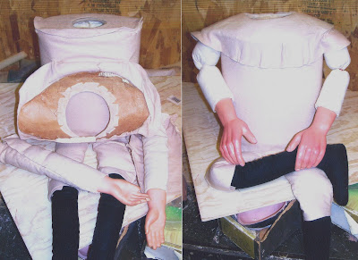

Hands
3/26/2009
Comment from Ron: I noticed a blog post where you replaced the hands on a figure and they look great. I always look at a "figger's" hands just to see the figure maker's overall workmanship first. As I was once told , "you can tell a lot by a person's hands." The same goes for our wooden friends.
* * * * * *
Comment from Clinton: That's true when the same person who made the head made the hands. However, it is very common for hands to be changed on a vent figure. Some figure makers even purchase hands from another figure maker. Col. Bill Boley and I had a running joke going between ourselves for years, each trying to get the other to make our needed hands. Making a head is enjoyable. But a pair of hands can take as much time as making the head and can become tedious. Who looks at the figure's hands closely anyway (other than Ron)?
* * * * * *
Comment from Clinton: That's true when the same person who made the head made the hands. However, it is very common for hands to be changed on a vent figure. Some figure makers even purchase hands from another figure maker. Col. Bill Boley and I had a running joke going between ourselves for years, each trying to get the other to make our needed hands. Making a head is enjoyable. But a pair of hands can take as much time as making the head and can become tedious. Who looks at the figure's hands closely anyway (other than Ron)?

These are photos of a vintage Madeline Maher body upon which I recently replaced the hands. The new hands were made by Braylu; painted by myself.